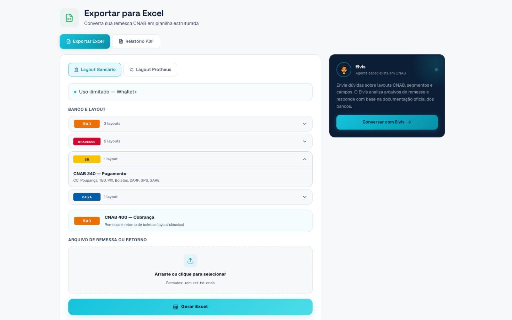
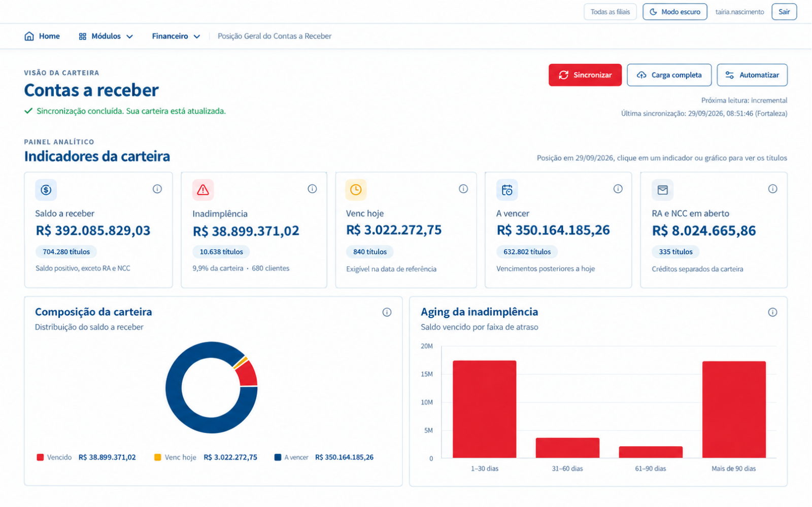
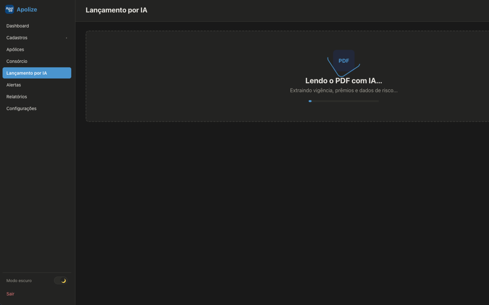
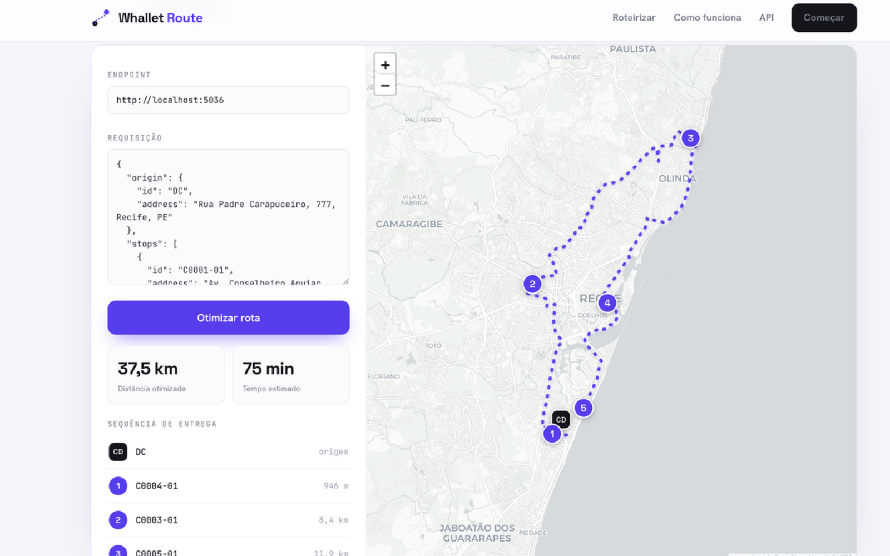

Usa Protheus? Temos um especialista para cada módulo.
Implantamos, evoluímos e damos suporte ao Protheus, com um especialista dedicado a cada área da nossa equipe. Ele acompanha o seu projeto do levantamento até a virada e continua com você depois dela.
- 01Estoque & Compras
- 02Faturamento
- 03Frente de Loja
- 04Financeiro
- 05Logística
- 06Controladoria
- 07Fiscal
- 08Contábil
- 09Desenvolvimento ADVPL & TLPP
Seu time de tecnologia, sem precisar montar um.
Além do Protheus, desenvolvemos soluções independentes. Você traz o desafio, nós desenhamos a solução e escolhemos com você a tecnologia certa, sem amarração a nenhuma plataforma ou fornecedor.




Antes da tecnologia, o processo.
Nenhum sistema conserta um processo mal desenhado, apenas acelera os mesmos erros. Por isso começamos entendendo e ajustando a operação, antes de escrever uma linha de código ou configurar qualquer ferramenta.
Sem pressa no começo.
Sem surpresa no fim.
Um time que entende de tecnologia e de negócio.
Reunimos desenvolvedores e consultores com experiência em dezenas de projetos, em empresas de diferentes portes e segmentos. Falamos a língua da tecnologia e entendemos a rotina de quem vai usar a solução.
Vamos
começar?
Conte o que você precisa: um site, um sistema novo, uma automação, um produto digital ou ajuda com o Protheus. A primeira conversa é direto com um dos sócios.